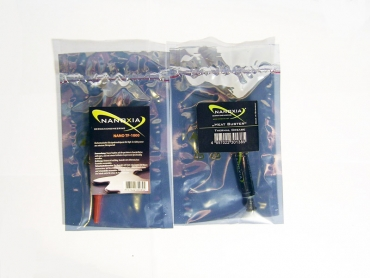
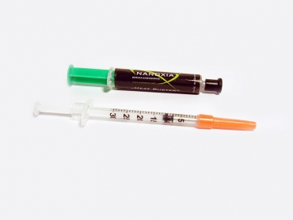

Nanoxia Heat Buster ir Nano TF-1000 termopastos
Žvilgsnis iš arčiau
 Abi termo pastos buvo supakuotos į antstatinius maišelius. Ant jų Nanoxia firminės etiketės, su pavadinimais. Pačios termo pastos yra sufasuotos į standartinius švirkšto tipo indelius. Iš tiesų Nano TF-1000 ir yra kuo tikriausiame švirkšte. Po oranžiniu kamšteliu yra mažulytė adatėlė, kuri leidžia labai tiksliai dozuoti švirkščiamos termo pastos kiekį.
Ant Nano TF-1000 pakuotės gausu perspėjimų. Gamintojas rašo: "prisilietus arba patekus į akis, gausiai praplauti vandeniu. Kreiptis į gydytoją prarijus. Naudoti gumines pirštines ir apsauginius akinius. Nenaudoti su aliuminiu. Panaudojimas iki 30 kartų" Skamba tikrai bauginančiai, bet juk ir vaistų nuo galvos skausmo instrukcijoje būna parašyta, kad vaistų galimas šalutinis poveikis yra galvos skausmas. Nors atsarga gėdos tikrai nedaro: siūlyčiau laikytis saugos rekomendacijų. Ypač, nenaudoti šios pastos su aliumininiais radiatoriais, nes juo po dienos iš radiatoriuje gali likti šauni skylutė.
Sąvybės
Nanoxia Heat Buster pasižymi šiomis savybėmis:- Aukštas šiluminis laidis - 10.4 mk / W
- Nelaidi elektrai
- Anti statinė
- Anti korozinė
- Bekvapė
- Pagaminta iš aliuminio cinko oksido su nano aliuminio dalelėmis
- Kiekis - 2 g
- Didelis šiluminis laidis (bent 10 kartų geresnis nei įprastų termo pastų)
- 100% skystas metalas (konsistencija kaip gyvsidabrio)
- Sudėtyje nėra nei silikonų nei metalų oksidų
- Sudėtis - Nanoxia saugoma paslaptis
Testavimas
Štai mano PC konfigūracija:
- Mainboard - DFI Infinity NFII Ultra
- CPU - AMD AlthonXP 2500+ @ 1837mhz
- CPU Cooler - AC Coper Silent 2L
- RAM - PQI DDR 1024 Mb 167Mhz
- HDD - WD 320 GB 7200rpm + 500 GB 7200rpm SATA
- Video - ATI Radeon 7500 64 MB VIVO
- DVD+/-RW - LiteON DVD+/-RW 8x4x8x12x SOHW-812S
- PSU -ACC 350w
- OS - XP SP3
Kaip buvo testuota:
Idle: Kompiuteris, dirbantis „tuščia eiga“, buvo paliekamas geram pusvalandžiui. Šio režimo metu veikė tik kasdieninės programos, nebuvo veikiama nieko ypatingo.
Load: Kompiuteris geras 20 min. buvo kankinamas "S and M Stres Tests" sintetiniais testais. Programa buvo nustatyta tik CPU testavimui. Pasirinktas vidutinis testavimo laikas ir aukšta procesoriaus apkrova, imituojanti žaidimų žaidimą ar darbą su 3D grafika. Analogiškas testas buvo atliekamas su kiekviena termo pasta.
Šylimo kreivės (procesoriaus temperatūra), taip pat, buvo stebimos "S and M Stres Tests" programoje. Testams buvo naudotas AC Coper Silent 2L aušintuvas tik todėl, kad jis turi pilnai varini pagrindą. Kaip rašiau truputėlį ankščiau, Nano TF-1000 termopasta blogai sugyvena su aliuminiu. Dėl šio aušintuvo pasirinkimo, kiek nukentėjo termo pastų pasirodymas, bet bendra vaizdą matote. Dar vienas niuansas: Nano TF-1000 absoliučiai nedrėkina (aukščiau pateikta nuotrauka dešinėje) mano naudojamo Althon 2500+ kristalo. Vos iššvirkšta termopasta sušoka į rutuliuką, todėl ją tolygiai paskirstyti nebuvo galimybės. Manau, kad su naujesnės kartos procesoriais, ši pasta tikrai gali pasirodyti geriau. TF-1000 nuvalyti, taip pat, nėra lengva: bene vienintelis dalykas kas ją sugeria yra acetone įmirkytas popierinis rankšluostis. Be acetono, pasta subyra i daugeli mažų ypač judrių rutuliukų, kuriuos surinkti yra dar sunkiau.
Pro et Contra
Nanoxia Heat Buster:
Pliusai:- Maža šiluminė varža (gerai perneša šilumą)
- Didelis kiekis
- Patogi pakuotė
- Gan per tiršta (per sausa)
Nanoxia Nano TF-1000:
Pliusai:- Maža šiluminė varža (gerai perneša šilumą)
- Pakuotės turinio užtenka ~30 kartų
- Patogus aplikatorius
- Negalima naudoti su aliuminiu
- Sunku tolygiai padengti
- Truputį pavojinga sveikatai (rekomenduotinos guminės pirštinės ir apsauginiai akiniai)
Gaila, bet dėl paminėtų minusu negaliu šios termopastoms suteikti pačio aukščiausio balo. Nanoxia Heat Buster yra per sausa. Ją užtepti yra tikrai sunku. Nano TF-1000 yra šiek tiek per pavojinga paprastam vartotojui. Be to, ją iš ties yra sudėtinga teisingai ir tolygiai padengti. Nepaisant šių trūkumų, pastos tikrai gerai atlieka savo darbą. Skirtumas tarp Nanoxia ir Titan termo pastų daugiau nei akivaizdus. O testų rezultatai kalba patys už save.
Atsižvelgęs į atrastus minusus ir teigiamąsias pastų savybes, Nanoxia Heat Buster ir Nano TF-1000 termopastoms suteikiu po
9 balus iš 10 galimų. Kas suapvalinus, atitinka 5 modding.lt rakčiukus.
Modding.lt komanda dėkoja Gökhan Avci iš www.nanoxia-europe.com už apžvalgai suteiktą produktą.
Jei norėsite pakomentuoti mano straipsnį arba pareikšti savo nuomonę, apsilankykite Modding.lt forume.


{kind=link}
{kind=link}
{kind=link}
{kind=link}
{kind=link}
{kind=link}
{kind=link}
{kind=link}